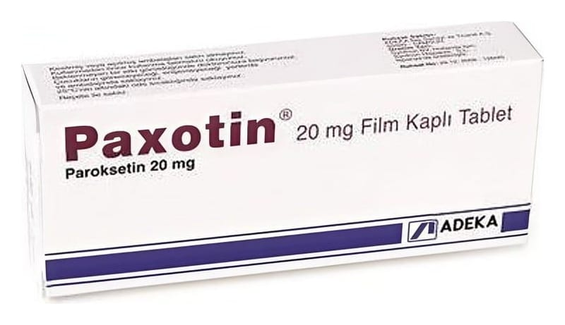

Paxotin 20 mg Film Kaplı Tablet, 14 Adet

Ne için kullanılır
KT · Bölüm 1PAXOT İN, etkin maddesi paroksetindir ve SSRI (Selektif Serotonin Geri Alım İnhibitörleri) adı verilen bir ilaç grubuna dahildir. PAXOTİN; yuvarlak, iki yüzü çentikli, bir yüzünde "POT 20“ baskısı bulunan sarı renkli film kaplı tabletlerdir ve 10, 12, 14, 20, 28, 30, 50, 56, 60 veya 100 film kaplı tablet içeren kutular ile kullanıma sunulmaktadır. Tüm ambalaj miktarları pazarlanmayabilir. PAXOTİN, aşağıdakilerden herhangi birinden şikayeti olan YETİŞKİNLERE reçete edilebilir: • Depresyon • Obsesif (saplantılı) ve kompülsif (kontrol edilemeyen) davranışlar • Kişinin toplum önüne çıkması gereken durumlarda yaşadığı aşırı endişe ve gerginlik • Travmatik olayları, örneğin trafik kazası, fiziksel saldırı, sel veya deprem gibi doğal felaketleri takip eden a şırı endişe • Açık alan korkusundan (agorafobi) kaynaklananlar dahil çeşitli korkulardan kaynaklanan panik ataklar • Genel endişe ve gerginlik hali
Yukarıdaki durumlar beyinde serotonin adı verilen kimyasal maddenin seviyesinde azalma olduğunda ortaya çıkabilir. PAXOTİN, tedavinin ilk birkaç haftasında beyindeki serotonin seviyesini arttırarak etki eder.